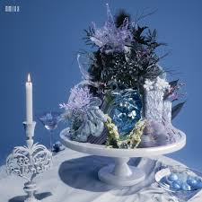

| 発売日 | ジャケット | アルバム名 (種類) | タイトル曲 | 初動枚数 | 初週枚数 |
|---|---|---|---|---|---|
| 2022/2/22 |  |
AD MARE 1st シングル |
O.O | 20,300枚 | 227,399枚 |
| 2022/9/19 |  |
ENTWURF 2nd シングル |
DICE | 250,661枚 | 442,207枚 |
| 2023/3/20 |  |
expérgo 1st ミニアルバム |
Love Me Like This | 405,580枚 | 630,811枚 |
| 2023/7/11 |  |
A Midsummer NMIXX's Dream 3rd シングル |
Party O'Clock 👑 歴代最高記録 |
719,886枚 | 1,030,541枚 |
| 2024/1/15 |  |
Fe3O4: BREAK 2nd ミニアルバム |
DASH | 127,908枚 | 618,550枚 |
| 2024/8/19 |  |
Fe3O4: STICK OUT 3rd ミニアルバム |
별별별 (See that?) | 341,362枚 | 585,717枚 |
| 2025/3/17 |  |
Fe3O4: FORWARD 4th ミニアルバム |
KNOW ABOUT ME | 435,914枚 | 702,876枚 |
| 2025/10/13 |  |
Blue Valentine 1st フルアルバム |
Blue Valentine ✨ 最新リリース |
468,587枚 | 644,865枚 |